| SOURCE | TITLE| IMAGE MATCH | click to source page |
| eBay Australia | DA1287) 1974 AU 20c wombat (L) | eBay Australia | 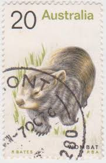 |
| eBay | Australia 20 Cent Postage Stamp Wombat Used | eBay | 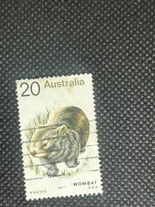 |
| eBay | Native Animals 20c Wombat Australia Postage Stamp (6.04) | eBay Australia | 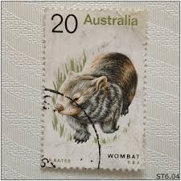 |
| HipStamp | Australia -1974 Animals "Wombat" 20c used | Australia & Oceania - Australia, Stamp / HipStamp | 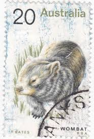 |
| HipStamp | Products from 'ozzy1' in Australia & Oceania / HipStamp | 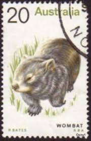 |
| HipStamp | Australia 565 Used 1975 20c Wombat | Australia & Oceania - Australia, General Issue Stamp / HipStamp | 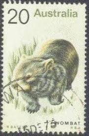 |
| 🦘🦘🦘🦘🦘🦘🦘🦘🦘 What animal appeared on the first Commonwealth of Australia stamps published in January 1913? a. Emu b. Kangaroo 🦘🦘🦘🦘🦘🦘🦘🦘🦘 #Australia | 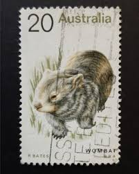 | |
| Dreamstime.com | Postage Stamp Australia, 1974. Common Wombat Vombatus Ursinus Marsupial Editorial Photography - Image of cent, fauna: 260667572 | 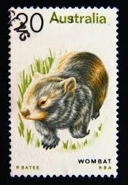 |
| HipStamp | Australia #565 20c Wombat | Australia & Oceania - Australia, General Issue Stamp / HipStamp | 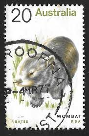 |
| Australia Scott 565 A224 1974 Feb 13 20c Stamp | 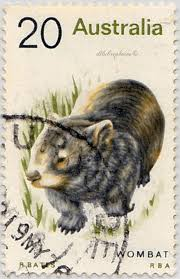 | |
| PicClick UK | 1974 AUSTRALIA USED Stamp Animal Possum 30c Item No C-2262 £1.17 - PicClick UK | 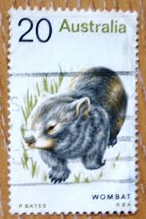 |
| Australian Stamp Catalogue | http://www.australianstrampcatalogue.com | 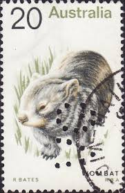 |
| Stamp Community Forum | Tasmania T Perfins - Stamp Community Forum | 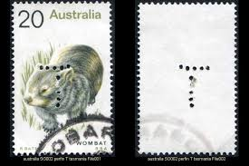 |
| ebid.net | Bahamas 1990 90th Birthday Queen Mother set 2v SG880-881 UM on eBid Ireland | 187842830 | 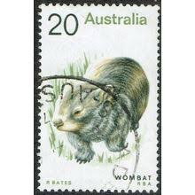 |
| Dreamstime.com | Animals on postage stamp editorial stock photo. Image of edition - 146663103 | 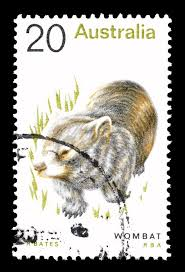 |
| Shutterstock | 1+ Thousand Kangaroo Stamp Royalty-Free Images, Stock Photos & Pictures | Shutterstock | 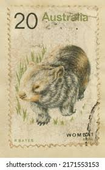 |
| Todocolección | australia - antártída. estación antártica austr - Compra venta en todocoleccion | 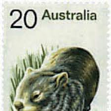 |
| raindrop.jp | 動物の切手｜ネズミ目（齧歯類）のネズミ・リスと有袋類カンガルー目（双門歯目）ポッサム | 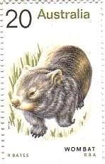 |
| eBay Australia | 20c Wombat 1974 Native Animal Definitive perf "VG" Victorian Gov. Used StampB132 | eBay Australia | 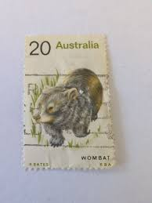 |
| the-philatelist.com | Australia 1974, noticing the wombat is no longer so common anymore – The-Philatelist | 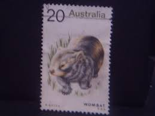 |
| eBay UK | Native Animals 20c Wombat Australia Postage Stamp (6.07) | eBay UK | 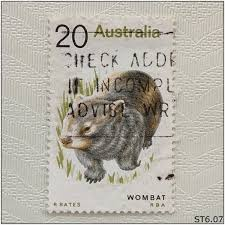 |
| Osta | Austraalia mark templiga (247159324) - Osta.ee | 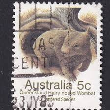 |
| eBay | AUSTRALIA 786a (SG784a) - Hairy-nosed Wombat "Lasiorhinus latifrons" (pf52404) | eBay | 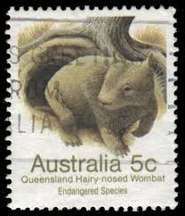 |
| eBay | Australia stamps 1948 - 1962 - 1974 | eBay | 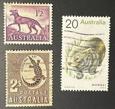 |
| markjattard.com | February | 2019 | markjattard | 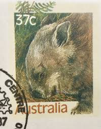 |
| eBay Australia | Australia 20 Cent Postage Stamp Wombat Used #1 | eBay Australia | 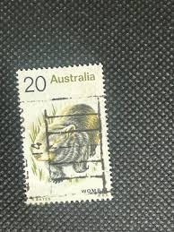 |
| Flickr | P_20191023_150516 | chun lan yang | Flickr | 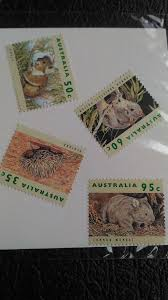 |
| eBay Australia | 1974 AUSTRALIA STAMP CORNER BLOCK 'ANIMAL DEFINITIVE ISSUE - WOMBAT' 4 x 20c MNH | eBay Australia | 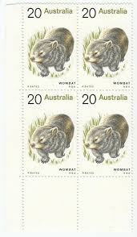 |
| Australia Queensland Hairy-Nosed Wombat Stamp Scott 786 A304 1981 July 15 5c | 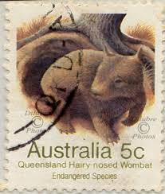 | |
| eBay | AUSTRALIA (MK7800) # 270,554,565 VF-MNH/1 USED 1954-TELEGRAPH / WOMBAT,SHRIMP | eBay | 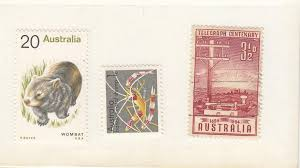 |
| Find Your Stamps Value | Threatened Species Type of 1992: Common wombat 95c Multicolored stamp price, value | 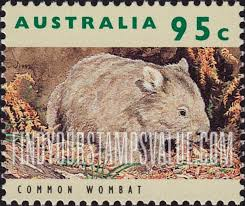 |
| CollectorBazar | AUSTRALIA- USED- QUEENSLAND HAIRY- NOSED WOMBAT- PPA12252 | 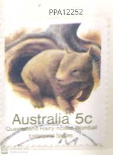 |
| eBay | 1992 Australian Wildlife 95c Wombat MUH - 2 Koala (Right) | eBay | 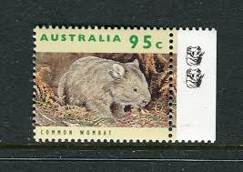 |
| Marktplaats | ≥ Grote CD Collectie - Diverse Genres — Cd's | Overige Cd's — Marktplaats | 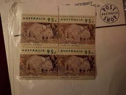 |
| ebid.net | Fujeira 1969 Eisenhower 5R MNH Stamp on eBid United States | 215319097 | 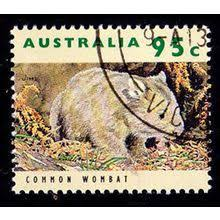 |
| Shutterstock | 澳大利亚-约1991年：澳大利亚印制的邮票上有一张昆士兰州毛鼻袋熊的图片，系列，约1991年。Philately.World邮票收藏。库存照片2682265821 | Shutterstock | 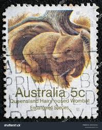 |
| eBay UK | Endangered Animals 5c Qld Hairy-nosed Wombat Australia Postage Stamp (6.04) | eBay UK | 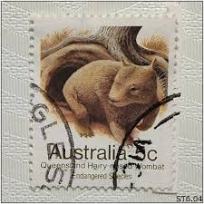 |
| Shutterstock | Australia-circa 1991a Stamp Printed Australia Shows Stock Photo 2682265821 | Shutterstock | 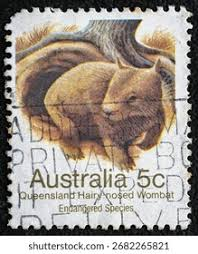 |
| eBay | Australia 1992-1998 Wildlife - Common Wombat 95c - 3 Stamps | eBay | 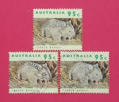 |
| HipStamp | Australia 1992 95 cents Wombat, used. Scott #1285 | Australia & Oceania - Australia, General Issue Stamp / HipStamp | 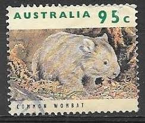 |
| Australian Stamp Catalogue | http://www.australianstrampcatalogue.com | 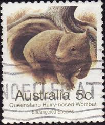 |
| Shutterstock | 5+ Hundred Nose Perforation Royalty-Free Images, Stock Photos & Pictures | Shutterstock | 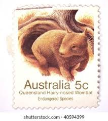 |
| HipStamp | Australia 1992 Sc#1285, SG#1369 95c Common Wombat USED. | Australia & Oceania - Australia, General Issue Stamp / HipStamp | 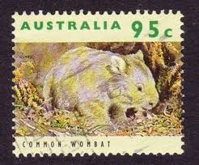 |
| Peter Walters Stamps | 1992 Wildlife Definitives 95c Wombat Stamp 2 Koala Reprint MUH - Peter Walters Stamps | 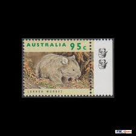 |
| PicClick AU | 2016 FAIR DINKUM Aussie Alphabet W Wombat $1 1 Dollar Coin & Stamp Pnc 3873/7500 $19.95 - PicClick AU | 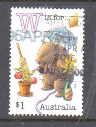 |
| eBay | wew resssdfdfd | eBay | 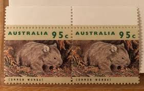 |
| eBay UK | 1992 Australia - Common Wombat, Threatened Animals - 95 Cent Stamp | eBay UK | 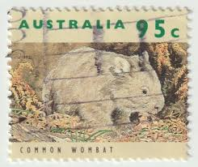 |
| HipStamp | Australia KGVI 1938 9d Platypus Chocolate John Ash Block Of 4 SG173 MNH BP7908 | Australia & Oceania - Australia, Stamp / HipStamp | 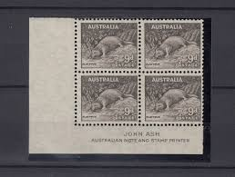 |
| earsathome.com | Now for Something Slightly Different | 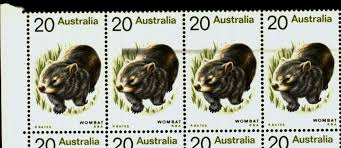 |
| Max Stern & Co | Samoa 1984 Olympic Games Los Angeles Set of 4 Stamps SG678/81 MUH | 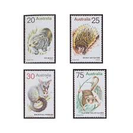 |
| eBay | Australia Post Stamp Facts Series 2 1996 #37 COMMON WOMBAT Stamp Card | eBay Australia | |
| eBay | AUSTRALIA 1285 (SG1369) - Common Wombat "Vombatus ursinus" (pb76874) | eBay | |
| Dreamstime.com | Animals on postage stamp editorial photo. Image of antique - 147857276 | |
| Dreamstime.com | Animal Lasiorhinus Stock Photos - Free & Royalty-Free Stock Photos from Dreamstime | |
| iStock | Platypus Stamp Stock Photo - Download Image Now - Australia, Postage Stamp, Animal - iStock | |
| eBay | Sydney Australia Harbour Reflections Postcard, Written, Stamped, Posted, VG | eBay | |
| eBay | Australia Decimal - 95c Common Wombat (1997) 3 Koala reprint Left. MUH | eBay | |
| Australia Wombat Stamp - Australian Fauna | ||
| eBay Australia | 1992 95c 'Common Wombat' 1 Koala Left Selvedge Reprint Stamp:Muh | eBay Australia |